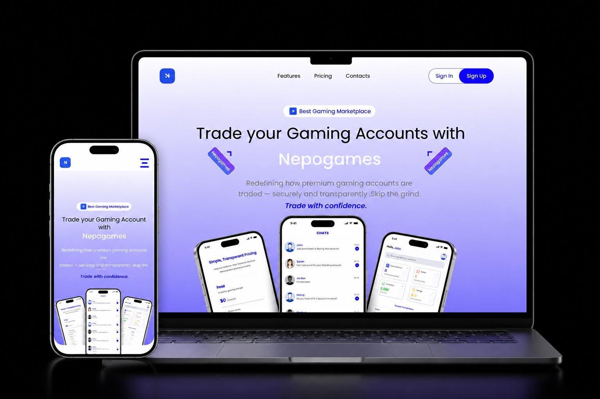
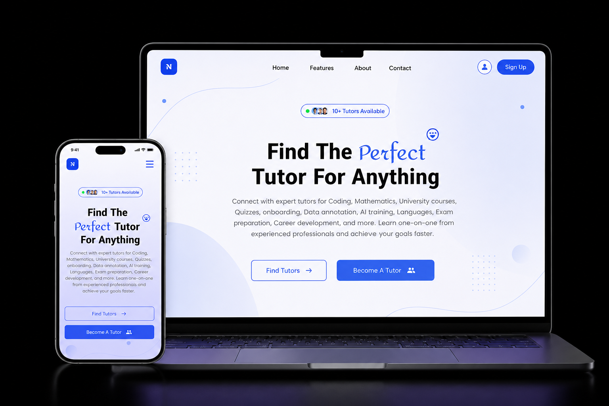

01 / 04
NEPOGAMES
A secure game account marketplace that eliminates peer-to-peer scams using escrow payments, in-app seller chat, and a built-in dispute system.
Visit liveFaiq’s portfolio · Selected work and answers
React · Next.js · TypeScript · Tailwind CSS
·
Framer Motion
Every project on this page
React Native · Flutter
Cross-platform product work
Node.js · Express · Nestjs · ASP.NET
·
MongoDB · Firebase
Pocketly, IlluEats, BUCC platforms
Figma · Blender · Photoshop
I design what I build



01 / 04
A secure game account marketplace that eliminates peer-to-peer scams using escrow payments, in-app seller chat, and a built-in dispute system.
Visit live02 / 04
A peer-to-peer escrow and delivery platform where payment is locked the moment a buyer pays and only released once delivery is confirmed by QR scan.
Visit live03 / 04
First place winner at Techfest 5.0 — a digital payment app with NFC tap-to-pay, QR scanning, and phone number transfers.
Visit live04 / 04
A WhatsApp bot that delivers curated tech jobs, hackathons, fellowships, and opportunities directly to users.
Visit liveHave something you want built? Send me the shape of it — a sentence is enough to start.
Start a conversationAsk about my work, the projects I’ve built, or my GitHub activity.
Answers are based on the information on this site and public GitHub activity.